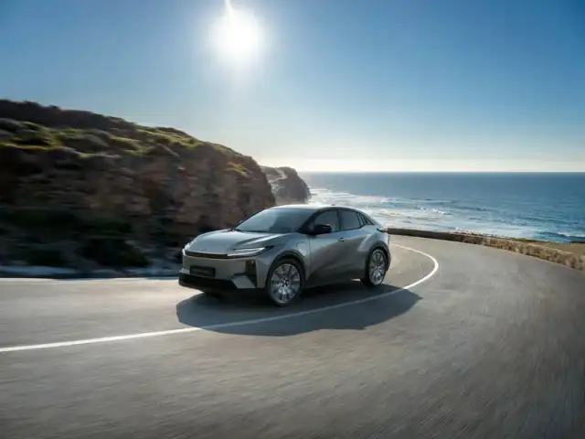

Stap in een Toyota waar je graag mee vertrekt.
Kom thuis bij een garage waar iedereen je kent.
Hoog zitten op weg naar je werk. Ruimte voor het weekend. Vind jouw Toyota, nieuw of tweedehands, bij De Bruyn in Machelen.

De dagelijkse rit mag iets zijn om naar uit te kijken.
Een hogere zit, een uitgesproken lijn of ruimte voor het gezin: begin bij wat voor jou telt. Deze drie Toyota’s geven elk een andere invulling aan je volgende wagen.
Modelselectie, geen voorraadlijst. Beelden tonen voorbeeldconfiguraties; uitrusting verschilt per uitvoering.
Zoek direct op model of budget
Je resultaten

Een foto trekt je aan.
Een proefrit laat je kiezen.
Hoe je zit. Wat je ziet. Hoe hij reageert wanneer je optrekt of een bocht neemt. Dat voel je pas achter het stuur.
Kies het model dat je aanspreekt en vraag een proefrit aan bij De Bruyn. We stemmen het model en het moment met je af.
Een aanvraag is nog geen bevestigde afspraak.
Niet nieuw.
Wel jouw volgende Toyota.
Het model dat je wilt rijden, met een verhaal dat je kunt nakijken. Kijk bij een tweedehandswagen verder dan de foto en de prijs: ook de kilometerstand, het onderhoud en de uitrusting tellen mee.
Zo vergelijk je wat je werkelijk koopt, niet alleen wat er op het prijskaartje staat.
Bekijk tweedehandswagensVier dingen om naast elkaar te leggen.
- De volledige prijs
- Wat inbegrepen is en welke eventuele kosten erbij komen.
- De gereden kilometers
- De kilometerstand en de beschikbare Car-Pass.
- Het verleden van de wagen
- Onderhoudshistoriek, staat en beschikbare documenten.
- De garantie op deze wagen
- De concrete dekking, duur en voorwaarden.
Een wagen koop je voor jaren. Kies ook je garage.
Je volgende Toyota kiezen is één moment. Er graag mee blijven rijden telt jarenlang. Bij De Bruyn in Machelen vind je verkoop, onderhoud en herstellingen op hetzelfde adres.
Je huidige wagen telt mee.
Bij inruil bekijken we je huidige wagen en bespreken we het overnamevoorstel samen met de prijs van je volgende Toyota. Zo zie je wat de overstap voor jou betekent.
Je factuur verdient uitleg.
Na onderhoud leggen we uit wat er gedaan is, waar nuttig met een rapport of foto’s. Zien we grote herstellingskosten, dan bellen we om te bespreken wat nodig is.

Blijf rekenen op je Toyota.
De rit naar je werk. De kinderen ophalen. Een volle wagen op weg naar vakantie. Voor die kilometers kun je bij De Bruyn terecht voor onderhoud, banden, nazicht en herstellingen.
Geef aan wat je wagen nodig heeft of wat je opmerkt. We stemmen het werkplaatsbezoek met je af.
Het moment wordt bevestigd na afstemming.
Je zaak draait.
Je wagen moet mee.
Van je eerste klantbezoek tot je laatste rit naar huis: je bedrijfswagen moet passen bij hoe je werkt én leeft. Voor één personenwagen of meerdere wagens bekijken we de mogelijkheden voor je zaak.
Bekijk zakelijk rijdenGereedschap mee.
Werkdag begonnen.
Je materiaal, je leveringen en je dagelijkse stops bepalen wat je bestelwagen moet kunnen. Begin bij de laadruimte, de toegang en de uitvoering die je werk vraagt.
Bekijk bestelwagensJe volgende rit begint in Machelen.
Kom de wagen van dichtbij bekijken. Neem plaats, bekijk de koffer en ontdek hoe hij voor jou voelt.